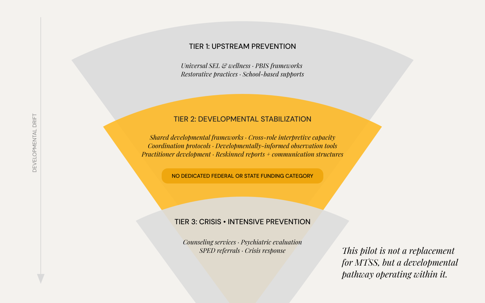

The argument
American schools were built to manage behavior. What they were not built to do—and what the current moment demands—is recognize and respond to the developmental conditions that produce that behavior in the first place.
The structural problem
Significant public and philanthropic investment flows to two ends of the youth support continuum. At one end: upstream prevention—SEL programming, PBIS frameworks, restorative practices, school-based wellness. At the other: downstream intervention—counseling services, psychiatric evaluation, SPED referrals, crisis response.
What sits between them is real, costly to ignore, and structurally unclaimed. Many young people—particularly those experiencing early relational instability, identity disruption, and emerging coping collapse—cycle between school discipline, short-term supports, and family pressure without ever reaching a layer that can recognize what's actually happening and respond before it hardens into crisis.

This is not a program gap. It is a systems gap—one that will not be closed by adding another intervention to either end of the continuum.
Why existing systems struggle
Schools
Earliest and most consistent contact with young people—but without frameworks for what lies beneath behavior. Defaults to behavior management as the primary mode of engagement, leaving what's driving it unread.
Clinicians
Diagnostic precision, but enters episodically and individaully with minimal context. By the time a referral arrives, the developmental window has often already narrowed.
County systems
Built to respond to what is institutionally legible—such as a diagnosis or crisis. Families wait to qualify. Meanwhile patterns harden into conditions that require more intensive intervention and respond to it less.
Young people don't arrive at institutional care because early intervention failed. They arrive there because no infrastructure for early intervention exists.
What developmental infrastructure means
evelopmental infrastructure does not replace existing services or create a new point of custody. It formalizes a layer of function that currently has no structural home — one that equips adults across education and behavioral health to recognize developmental signals earlier, respond in coordinated ways, and actively scaffold the neurological and social capacities that make learning, belonging, and regulation possible. This is not intervention after the fact. It is the deliberate integration of developmental science into the pedagogical and relational structures of school itself. Specifically, it does four things:
01
Early patterns (e.g. neurobiological overload, relational collapse, identity instability) that precede crisis and are most likely to consolidate into diagnosable conditions if left unaddressed.
02
So educators, clinicians, and community providers can recognize the same signals and respond in developmentally compatible ways—rather than mislabeling, delaying, escalating, or offering disparate care.
03
That feed into schools, therapeutic environments, and family systems—with attention to nervous system regulation, relational repair, and identity formation prior to diagnostic thresholds.
04
Ensuring adults across a school share developmental frameworks and coordinate effectively so that the conditions surrounding young people visibly improves. Less escalation. Less misplacement. More adults who can see what's happening and respond in ways that support healthy development
Why now
Youth development is now unfolding amid overlapping pressures—persistent digital saturation, social fragmentation, economic precarity, and reduced access to stable, regulating adult relationships. Together, these conditions have intensified neurobiological load and shortened the window in which distress remains subtle, relational, and recoverable.
Without a recognized developmental middle layer, this compression accelerates escalation. Young people reach crisis before qualifying for care. Systems absorb higher downstream costs. And adult mental health and substance use systems become the first point of real containment rather than the last line of support.
We invest in the earliest point in the trajectory where intervention is both humane and cost-effective currently lacks a clear structural home.
What this brief is inviting
Futureschool Collaborative is building and testing the developmental coordination layer that public school systems currently lack—in partnership with districts, grounded in direct school practice, and designed from the start to be replicable and publicly available.
This brief is an invitation to partners already thinking systemically about the future of behavioral health and education—particularly those engaged in shaping how early intervention, accountability, and long-term impact are understood, supported, and coordinated across sectors.
Moving schools from a behavior management culture to developmental infrastructure. That is the work. That is the gap. That is what this moment requires.
This brief speaks to the structural argument at a general level. For partners with a specific interest in the behavioral health, neurobiological, or early intervention dimensions of this work, a more targeted companion brief is available on request.
hello@futureschoolcollaborative.orgFutureschool Collaborative · 2026
A project of the Oakland Public Education Fund